Can a generalist VLM (Claude Opus 4.8) curate a trip album as well as the engineered
Albumify pipeline? Same 122 photos → 768px (hash 42756fcc088ed9fc…), each picks an ordered
K=20. Spec-102.
| Metric | Albumify (minimal) | VLM (opus-4-8) | Read |
|---|---|---|---|
| Distinct scenes covered | 20 | 20 | by Albumify's own scene clusters |
| Redundancy rate | 0.00 | 0.00 | VLM slightly more diverse — and it never saw the clusters |
| Pick overlap | 3 / 20 identical | 70% of the album is a genuine disagreement | |
| Picks Albumify quality-filtered | — | 5: 20230817_180846, 20230817_212315, 20230821_130239, 20230824_144214, 20230826_125819 | VLM kept shots Albumify auto-rejected on quality |
minimal
pipeline, not the full product: the full 33-step run OOM-kills this machine when the occlusion
CLIP model loads on top of YOLO+InsightFace+DINOv2+AVA, so occlusion & tilt penalties are
disabled here. (2) The human blind A/B verdict is not yet collected — the judging page is
built (ab_viewer_austria.html); this is a solo N=1 pilot, so even once judged it is an
illustrative anecdote, not a measured win-rate.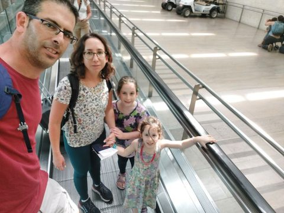
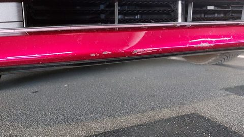
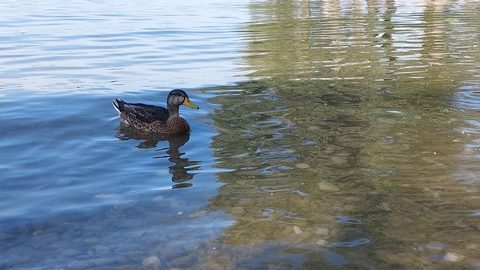
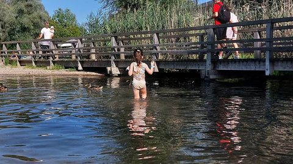
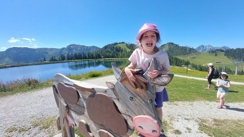
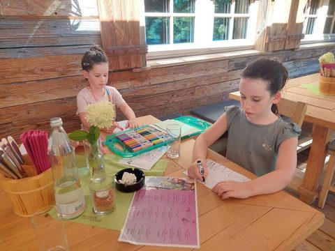
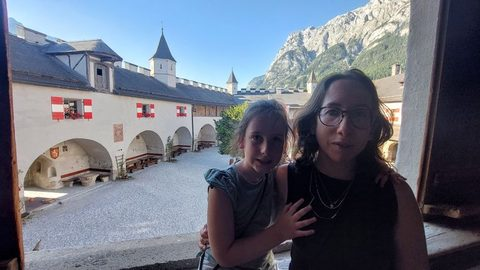
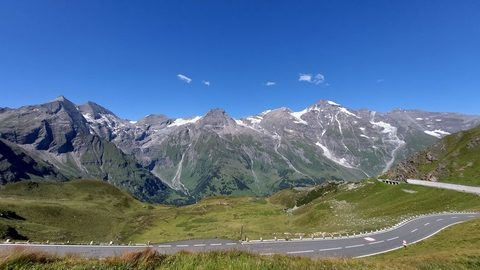
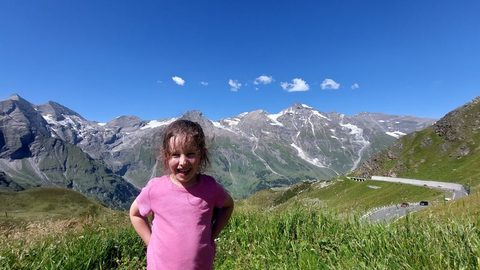
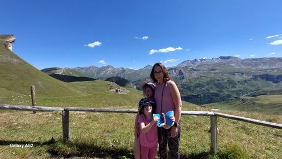
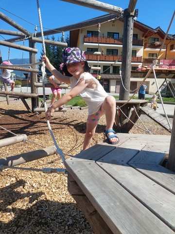
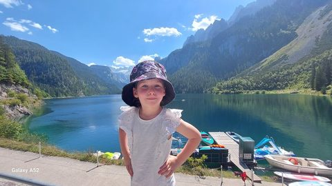
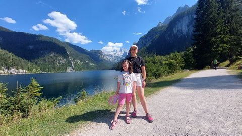
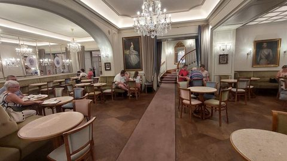
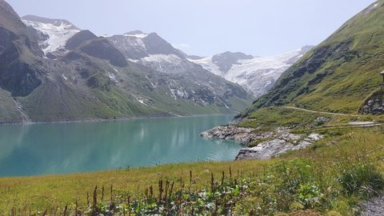
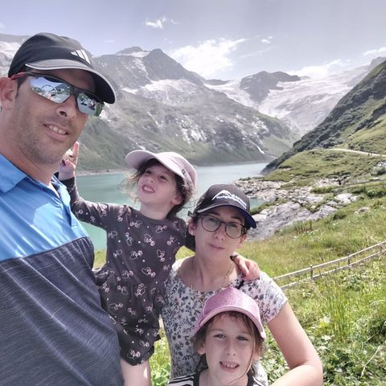
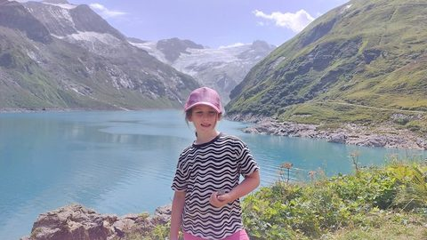
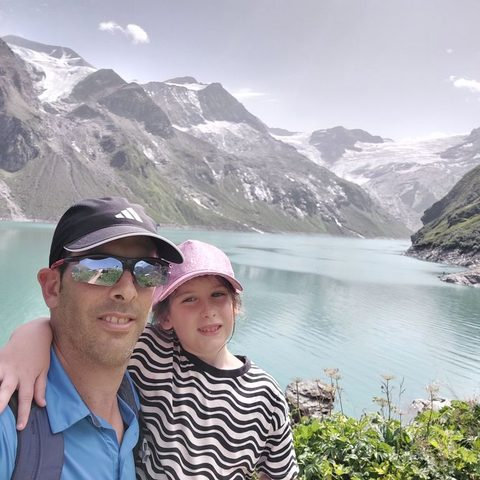
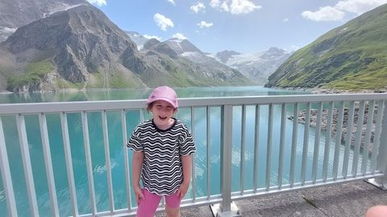
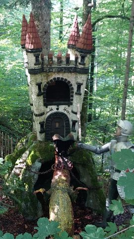
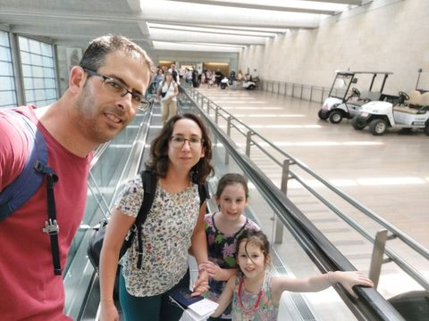
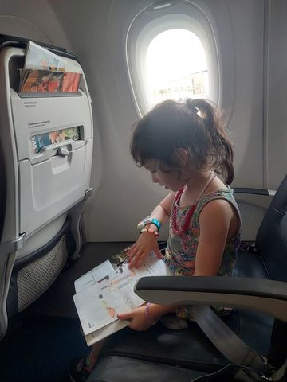
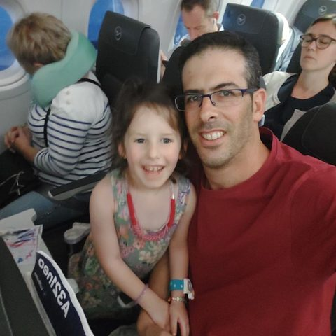
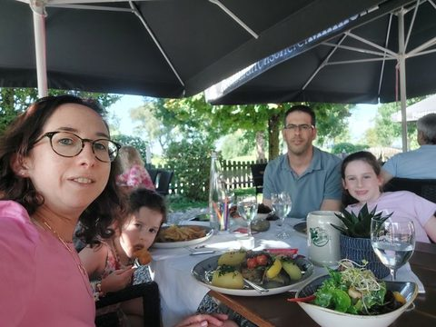
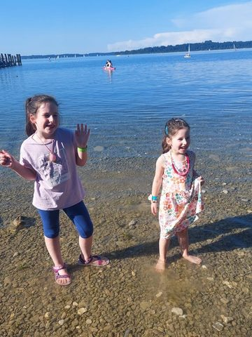
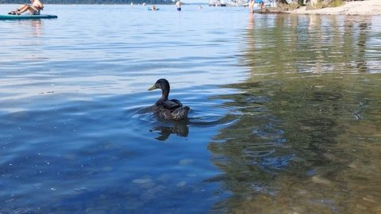
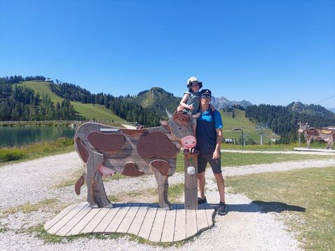
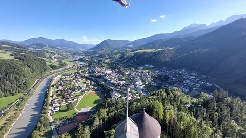
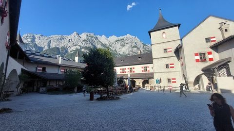
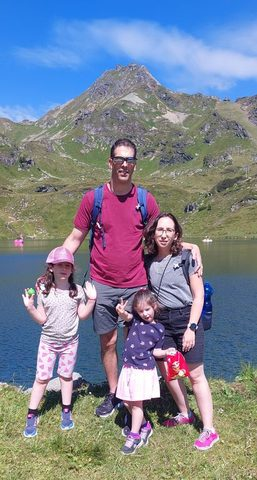
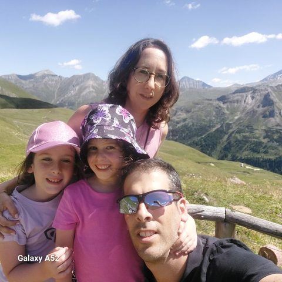
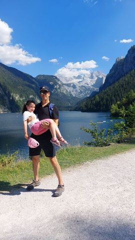
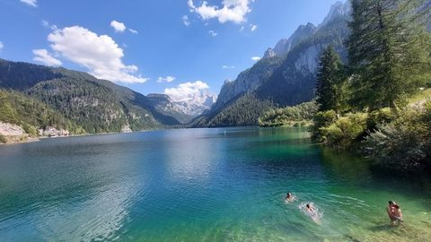
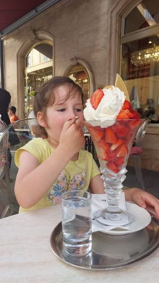
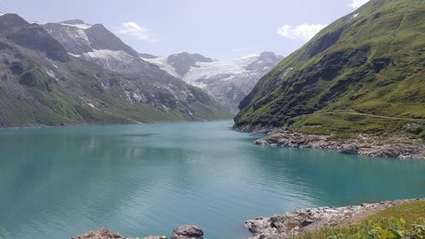
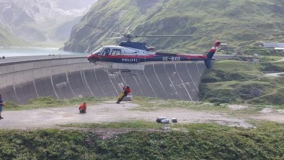
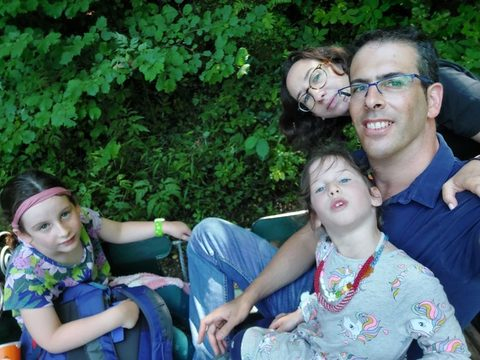
The VLM classified the whole collection as trip / road and wrote the arc: "A multi-day family road trip through the Austrian and Bavarian Alps—starting at the airport and moving between lakes, mountain passes, castles, glacier reservoirs, and playgrounds—captures two young daughters playing, posing, and eating their way through summit adventures and lakeside days." It then grouped the trip into 131 moments with human-readable labels, moment tags, and a best-frame reason each (structured JSON, product-shaped). A sample:
| Day | Moment | Tag | Why this frame |
|---|---|---|---|
| 2020-05-02 | Mom & daughter through the year — a photo collage | the-one-where-X | This is a single stitched collage capturing a whole year of mother-daughter beats — cuddles, meals, walks, nap time, and masked-era portraits — the perfect album cover in one frame. |
| 2023-08-17 | Parking at the airport before the flight | transit | The one where the trip begins — dad in frame with the terminal and control tower behind, capturing the departure vibe better than the empty lot shot. |
| 2023-08-17 | Family selfies on the travelator to the gates | candid | The whole crew is together with the little one mid-laugh — the liveliest of the near-identical travelator selfies. |
| 2023-08-17 | 'Love is in the air' heart bench | posed-group | Arms flung wide with a big grin inside the giant red heart — the joyful version of the pose. |
| 2023-08-17 | Snacks and downtime in the airport lounge | meal | The one where the older girl beams over her plate of cookies and juice, a warm lounge moment with the departures board behind. |
| 2023-08-17 | Youngest reading by the plane window pre-takeoff | candid | She looks up from the magazine straight at the camera with a shy smile — the frame that connects, versus the profile reading shots. |
| 2023-08-17 | In-flight activities and dinner service | meal | Both girls in one frame with coloring books and trays out — the fullest picture of the family settling in for the long flight. |
| 2023-08-17 | Dad-and-daughter selfies on the plane | posed-group | Both are smiling wide and sharp — the keeper of the cozy dad-and-daughter flight moment. |
| 2023-08-18 | The one where we documented the car scratches | detail | Clearest close-up of the damage on the pink car — the useful evidence shot for insurance. |
| 2023-08-18 | Airport lounge before the flight | candid | Both girls relaxed and smiling with a peace sign — sweet travel-day kickoff. |
| 2023-08-18 | Family lunch on the terrace | meal | The whole family in one frame under the umbrella — the classic lunch selfie. |
| 2023-08-18 | The one where she demolished the ice cream sundae | candid | Total concentration on that giant sundae — a perfect kid dessert moment. |
| 2023-08-18 | Wading and duck-hunting at the lake | candid | Both girls striking a playful pose in the water with the sailboats behind — the liveliest of the whole lake-play series. |
| 2023-08-18 | Golden lake view & ducks | golden-hour | Duck gliding across the glassy blue water with beachgoers behind — the calm, atmospheric lake shot. |
| 2023-08-18 | Supermarket run with the cart passenger | candid | Beaming from inside the shopping cart with her plush toy — a joyful everyday-trip snapshot. |
| 2023-08-18 | Meeting the pony at the farm guesthouse | candid | Everyone reaching to pet the pony together — the warmest interaction of the two. |
| 2023-08-18 | Swing time in the garden | goofing | One swinging while the other pushes — motion and fun captured better here. |
| 2023-08-18 | Feeding the rabbits | candid | Big grin next to the rabbit at the hutch — the happiest, clearest of the bunny series. |
| 2023-08-18 | Sisters posing by the geraniums with mountain views | posed-group | Both girls smiling and holding hands with the alpine backdrop — the strongest posed keeper. |
| 2023-08-18 | The one with the goofy faces on the balcony chairs | goofing | One girl grinning while the younger pulls a cheeky face — best comic timing of the trio. |
| 2023-08-18 | Bedtime hide-and-peek under the duvet | goofing | Peeking out from the covers with a big grin — the cozy end-of-day closer. |
| 2023-08-19 | Morning view from the valley meadow | detail | Clean establishing shot of the day — deep blue sky over the green Austrian valley sets the scene. |
| 2023-08-19 | The one where the girls posed with Wolli the beaver mascot | posed-group | Both girls in frame leaning against the waving mascot with the village behind — the fullest, happiest version of this stop. |
| 2023-08-19 | Mountain lake at the summit | candid | Big natural grin by the crystal water with the lift and other kids around — a real joyful lakeside beat. |
| 2023-08-19 | Riding the wooden cow at the mountain play area | goofing | Cheekiest wide-open laugh mid-ride on the cow — the peak of the goofing burst. |
| 2023-08-19 | Family takes turns on the cow with the lake behind | posed-group | Dad and daughter together on the wooden cow with the lake and peaks — the keeper family portrait of the spot. |
| 2023-08-19 | Older daughter and the wooden beaver | posed-group | Both waving alongside the carved beaver — the more relaxed, well-lit of the pair. |
| 2023-08-19 | The one where she went full silly on the pig-cow | goofing | Tongue out, hat askew, lake glinting behind — the funniest frame of the whole silly streak. |
| 2023-08-19 | Older daughter by the fence, big mountains behind | posed-group | Sharpest portrait with the dramatic snow-streaked massif filling the background. |
| 2023-08-19 | Tennengebirge massif from the ridge | detail | Cleaner, brighter version of the big limestone range framed by pines — the scenic anchor shot. |
| 2023-08-19 | Ice cream break with a mountain panorama | posed-group | Both sisters together with ice creams and the whole valley behind — the warmest sibling shot of the day. |
| 2023-08-19 | The one where Dad joined the rope playground | candid | Daughter concentrating on the rope walk with the family watching — the story-telling action frame. |
| 2023-08-19 | Gondola down with Dad | transit | Quiet father-daughter moment riding the gondola back down. |
| 2023-08-19 | Snowboarder Wolli at the base | posed-group | Both girls together beside the snowboarding beaver statue — the complete version of the stop. |
| 2023-08-19 | Coloring at the mountain hut restaurant | candid | Both girls busy drawing while waiting for food — a lovely everyday-travel candid, older one glancing up. |
| 2023-08-19 | The one with the lava-cake dessert faces | goofing | Both pulling faces over dessert, one resting on the other — the playful, affectionate meal moment. |
| 2023-08-19 | Whole family on the lift to Hohenwerfen | transit | Rare all-four-in-frame shot with everyone looking — the family-together transit keeper. |
| 2023-08-19 | Mom & daughter lift selfies | candid | The calm, connected close-up where both settle and smile — best of the selfie burst. |
| 2023-08-19 | The one where they became castle royalty (photo board) | goofing | Faces clearly poking through the king/knight/princess cutout — the cleanest, most complete gag frame. |
| 2023-08-19 | Hohenwerfen castle courtyard | landmark | Sweeping panorama of the courtyard with towers and the mountain wall — the definitive castle establishing shot. |
| 2023-08-19 | Little one with the audio guide | candid | Sweet unposed moment of the youngest absorbed in the castle audio guide. |
| 2023-08-19 | Bell tower & town view from the ramparts | landmark | The soaring aerial-feel view over Werfen and the river with the falcon in flight — the wow shot from the tower. |
| 2023-08-19 | Mom & daughter on the castle balcony | posed-group | Both well-lit and cheek-to-cheek with the courtyard and peaks behind — the warmest of the balcony set. |
| 2023-08-19 | Posing with the knight in armour | posed-group | Both girls hamming it up beside the armoured knight and Hohenwerfen shield — the liveliest pair shot to close the castle visit. |
| 2023-08-20 | Morning selfie on the valley road | candid | Mom's early-start selfie with the green valley behind — the 'we're off' opener of the day |
| 2023-08-20 | The mirror-calm lake with the fountain | landmark | Wider frame with the perfect fountain reflection and the chalet on the hill — the postcard shot |
| 2023-08-20 | Breakfast before the mountain | meal | The set table with menus and a peeking kid — the family breakfast beat |
| 2023-08-20 | Posing on the tree stump in the woods | posed-group | All three girls with mom lined up on the stump against the pines — the fullest, brightest version of the stump portrait |
| 2023-08-20 | With Bobby the ski bunny mascot | the-one-where-X | The kid throwing a peace sign next to the giant grinning bunny — most playful of the mascot trio |
| 2023-08-20 | Goofing at the lakeside playground | goofing | Daughter mid-shout with arm flung out and her shadow — pure candid energy |
| 2023-08-20 | Family portrait at the mountain lake | posed-group | The tight all-five family group with the dramatic peak rising straight behind — the keeper of the day |
| 2023-08-20 | The little alpaca | detail | Fluffy young alpaca standing in the grass — the surprise animal encounter |
| 2023-08-20 | Kaiserschmarrn on the hut terrace | meal | The two girls in sun hats facing each other over the skillet of Kaiserschmarrn — the cozy lunch moment |
| 2023-08-20 | Little one exploring the summit playground | candid | Daughter perched on the log seesaw with the lake and peaks spread below — better sense of place |
| 2023-08-20 | Walking down with the village view | goofing | Mom and both girls striking silly poses with Obertauern and the peaks behind — the happy end-of-day descent |
| 2023-08-21 | The one where the girls shared the red trike at the guesthouse | goofing | Both girls smiling and settled on the trike together — the happier, better-lit of the pair before heading out for the day |
| 2023-08-21 | First view of the Grossglockner high road valley | landmark | Clean sweeping establishing shot of the glacier-fed valley that opens the mountain day |
| 2023-08-21 | Mum & the girls at the panorama board | posed-group | The whole trio composed and looking at the camera with the peaks framed behind — the keeper from a long burst of near-identical poses |
| 2023-08-21 | Dad & daughter selfies against the glacier peaks | candid | Both grinning big with the sharp snowy ridge behind — the warmest of the four selfies |
| 2023-08-21 | Snow-streaked peaks above the picnic meadow | landmark | The one with the hairpin road curving through — best sense of place for the mountain pass |
| 2023-08-21 | The one where they spun on the rope carousel | goofing | Both girls climbing the cone with the pointed peak rising right behind — playful energy in a striking setting |
| 2023-08-21 | Zipline & the pole-swing playground | goofing | Daughter mid-swing, legs out and grinning under the hat — the liveliest action frame, and dad's ham on the pole is a fun aside |
| 2023-08-21 | Sheep dozing against the stone alpine hut | detail | The black-faced sheep looking straight at the lens against the stone wall — the most characterful animal shot |
| 2023-08-21 | The one where she posed by the sheep at the hut | candid | Daughter smiling in pink beside a resting sheep — a spontaneous little kid-and-animal beat |
| 2023-08-21 | Daughter dancing in the alpine meadow | candid | Standing tall hands-on-hips with the full peak panorama behind — the most confident, framed of the meadow shots |
| 2023-08-21 | Dad & daughter selfie burst at the pass summit | candid | Daughter's huge open smile hugging dad's shoulder against blue sky and glacier — the joyful standout of a big selfie run |
| 2023-08-21 | Dad & older daughter at the ridge overlook | posed-group | Both looking relaxed and warm with the toothed peaks behind — the friendliest of a repetitive set |
| 2023-08-21 | Older daughter mid-story in the meadow | candid | Caught mid-gesture talking, the panorama wide behind her — a natural, animated candid |
| 2023-08-21 | The jagged pass panorama | landmark | Wider composition with the road and green foreground giving the sharp peaks scale |
| 2023-08-21 | Wildflowers clinging to the rock | detail | The vivid purple monkshood spike stands out sharply — a proper botanical detail worth keeping |
| 2023-08-21 | Whole family selfies on the green alpine ridge | posed-group | The rare all-four frame where both girls are beaming and everyone's in view — the family keeper of the day |
| 2023-08-21 | Mum & girls with the butterfly toy at the fence | posed-group | Tight, clear trio with the rolling green mountains behind — the sweetest and most in-focus of the fence shots |
| 2023-08-21 | Green rolling slopes below the pass | landmark | Softer, grassier mountain landscape that closes the day differently from the rocky glacier views |
| 2023-08-22 | Playground rope-course adventure | candid | Big grin mid-balance on the ropes — pure playground joy with the mountain lodge behind |
| 2023-08-22 | Gosausee lakefront portraits | posed-group | Hands-on-hips confident pose with the Dachstein peaks and turquoise lake perfectly framed behind her |
| 2023-08-22 | Wading at the wild lakeshore | candid | Both sisters waving their hats together in the shallows — the sibling connection is the heart of the moment |
| 2023-08-22 | The clear-water boulder & lake scenery | detail | The lone tree-topped boulder mirrored in glassy emerald water is the standout scenic shot |
| 2023-08-22 | The one where we met the ducks | the-one-where-X | Two mallards gliding together close to shore over crystal water — the best of the duck encounter |
| 2023-08-22 | Little one playing in the shallows | candid | Cheeky head-tilt with ripples radiating around her legs — the most characterful frame of the toddler at the water |
| 2023-08-22 | Blueberry-picking break in the woods | goofing | Dad reclining in the bushes with both girls piled on — everyone laughing and flashing peace signs, the goofiest family beat of the day |
| 2023-08-22 | Lakeside family photos by Gosausee | posed-group | Dad crouching with daughter on his shoulders, both grinning, glacier peaks towering behind — the most dynamic and joyful family shot |
| 2023-08-22 | Swimmers & the glacier view | landmark | Sweeping turquoise-to-emerald lake with swimmers and the Dachstein glacier — the definitive landscape of the visit |
| 2023-08-22 | Coloring & cake at the lodge | meal | Big sister beaming with cake between the two girls — cozy end-of-day treat captured warmly |
| 2023-08-23 | Morning trike & go-kart races in the parking lot | candid | Both sisters piled onto the go-kart together, backed by mountains — the fullest 'kids running wild before we set out' shot |
| 2023-08-23 | Coffee stop — mom needs a break | candid | Hands-behind-head, empty lemon glass — the classic 'we're on holiday but I'm exhausted' portrait |
| 2023-08-23 | The-one-where-she-lost-a-tooth selfie | the-one-where-X | Big gap-toothed grin selfie, only frame of this beat |
| 2023-08-23 | Poking at the lake shore | candid | Two sisters crouched together dipping hands in the clear water — a quiet shared moment |
| 2023-08-23 | Flower fountain in the spa garden | posed-group | Mom and daughter cheek-to-cheek framed by the full sweep of flowers and grand pavilion — the keeper of the garden set |
| 2023-08-23 | Zauner café windows — dreaming about desserts | detail | Head tilted with a cheeky grin against the glass case — captures the anticipation better than the food-only shots |
| 2023-08-23 | Inside the grand Zauner konditorei | detail | The chandeliered salon with the sweeping staircase sets the elegance of the place best |
| 2023-08-23 | Giant strawberry sundae showdown | meal | Delighted open-mouthed grin diving into the cake beside the towering strawberry sundae — the joy of the whole dessert feast in one frame |
| 2023-08-23 | The-one-where-they-posed-with-Empress-Sisi | goofing | Little one goofing wide-legged and mouth-open under the Gugelhupf lady mural — the funniest of the wall poses |
| 2023-08-23 | Family selfies at the town fountain monument | posed-group | Everyone actually in frame with genuine smiles and the ornate fountain rising behind — the best of the round of tries |
| 2023-08-23 | The-one-where-they-rode-the-wooden-post-horse | goofing | Little sister waving with arm flung out mid-cheer atop the wooden horse, big sister behind — pure end-of-day fun |
| 2023-08-24 | The sisters' double-tricycle showdown | goofing | Both girls beaming and hamming it up on the red trike with mountains behind — pure sibling joy in golden morning light |
| 2023-08-24 | The one with the tattered red admiral | detail | Sharpest, most colorful frame of the butterfly with wings open showing the vivid orange band |
| 2023-08-24 | First look at the turquoise glacier reservoir | landmark | Wide sunlit shot with glacier, mirror-still turquoise water and wildflowers framing the classic postcard view |
| 2023-08-24 | Family selfies above the reservoir | posed-group | Everyone smiling and engaged, little one giving a thumbs up — the warmest of the four family attempts |
| 2023-08-24 | Lakeside panoramas on the walk | landmark | Trail leading the eye down to the glacier with a hiker resting — gives scale and a sense of the hike |
| 2023-08-24 | Big sister posing by the glacier lake | posed-group | Confident smile and playful stance with the full turquoise lake and glacier behind — the keeper of the set |
| 2023-08-24 | Dad & daughter selfies at the lake | posed-group | Both looking relaxed and happy with the glacier lake spread out behind them |
| 2023-08-24 | The one where she rides the wooden fox telescope | goofing | Little one perched on the carved fox peering through the viewer — a spontaneous kid moment |
| 2023-08-24 | Little sister's lakeside portraits | posed-group | Cheeky wide grin mid-stride, the most alive frame of her floral-dress portraits by the lake |
| 2023-08-24 | Dad & little one selfies | posed-group | Little one raising a fist with a curious look — more character than the second frame |
| 2023-08-24 | Walking the dam wall | candid | Mom and daughter pausing at the rail to take in the glacier — a natural travel-day candid |
| 2023-08-24 | Reflections & goofy grins on the dam | goofing | Wide-open laughing face at the rail with the mirror-calm lake behind — infectious kid energy |
| 2023-08-24 | The reservoir from way up high | landmark | The full heart-shaped blue reservoir seen from above — the dramatic 'wow' view of the day |
| 2023-08-24 | Climbing wall & wooden fox play | goofing | Big sister laughing hard perched atop the mini climbing wall with the lake and glacier behind — the most joyful frame |
| 2023-08-24 | The one where the police helicopter landed at the dam | the-one-where-X | Helicopter mid-hover with a crew member on the line against the green mountain — the peak action of an unexpected event |
| 2023-08-24 | Dam wall crossing & waterfall | landmark | Cleanest sweep of the turquoise reservoir curving toward the dam — the signature landscape of the crossing |
| 2023-08-24 | Down at the glacier meltwater stream | detail | Milky glacier stream winding down from the peaks with a kid crouched in the corner for scale — end-of-hike atmosphere |
| 2023-08-24 | Evening play in the guesthouse yard | candid | Little one absorbed in sandbox digging with the valley and swings behind — a peaceful end-of-day candid |
| 2023-08-24 | Ice cream sundae to end the day | meal | Sisters sharing spoonfuls of the big sundae, mid-bite and animated — the tasty reward shot |
| 2023-08-24 | Guesthouse garden at dusk | golden-hour | Warm lamp light on the blooming hydrangeas as night falls — a quiet closing note for the day |
| 2023-08-26 | Chilly forest walk into Ruhpolding park | candid | The bundled-up hoodie and empty forest trail sets the scene for the day's cool-weather start before the park adventure |
| 2023-08-26 | Posing with the giant Ruhpolding woodsman | posed-group | Both girls sit symmetrically on the stumps with the full statue and park sign clearly framed — the keeper 'we were here' shot |
| 2023-08-26 | Old-timey sawmill figures | detail | Cleaner light on the carved sawyer figures and the readable sign make this the better exhibit record |
| 2023-08-26 | Miniature Bavarian farmhouse model | detail | Charming intricate model that captures a distinct highlight of the museum walk |
| 2023-08-26 | The tunnel slide by the stairs | candid | Slide mouth and stairs both visible with people descending — better conveys the ride-and-climb energy |
| 2023-08-26 | Kids up on the water-mill platform | candid | Both girls perched high on the bridge give a fun sense of scale and exploration |
| 2023-08-26 | The one where she sprawls on the wobble dome | goofing | Big grin mid-sprawl on the red dome — pure playful candid |
| 2023-08-26 | Family selfie squeeze on the ride | posed-group | Everyone's face is clear and relaxed with genuine smiles — the strongest of the four-frame selfie burst |
| 2023-08-26 | Riding the little forest train | transit | Sweet portrait with the locomotive behind her, snacks in hand — captures the ride in motion |
| 2023-08-26 | The dragon-and-knight fairy castle | detail | The flame effect from the knight makes this the most dramatic and memorable version of the castle scene |
| 2023-08-26 | Girls hamming it up by the castle fence | goofing | The big genuine smile beats the exaggerated poses in the other frames for a keeper portrait |
| 2023-08-26 | Peeking into the fairytale cottages | candid | Both girls up on the step gazing into the glowing window frames the storybook wonder perfectly |
| 2023-08-26 | The one at the amphibian tree-house window | candid | Little one reaching up in dappled forest light — a quiet, charming solo moment |
| 2023-08-26 | Washing up in the fancy stone restroom | candid | Both girls at the mirror-lined sinks — an everyday travel moment worth remembering |
| 2023-08-26 | Boarding the green dragon coaster | transit | Everyone settled and looking up with the dragon head prominent — the liveliest of the boarding sequence |
| 2023-08-26 | The one where she hides behind the placemat | goofing | Peeking over the table with her plush toy — an endearing end-of-day dinner candid |
| 2023-08-26 | Fresh juice at dinner | meal | The two tall juices and her animated chatter close out the day at the table |